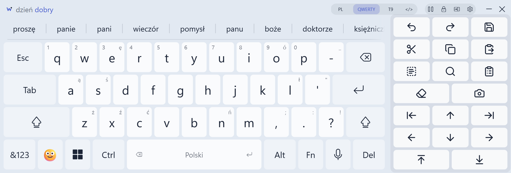
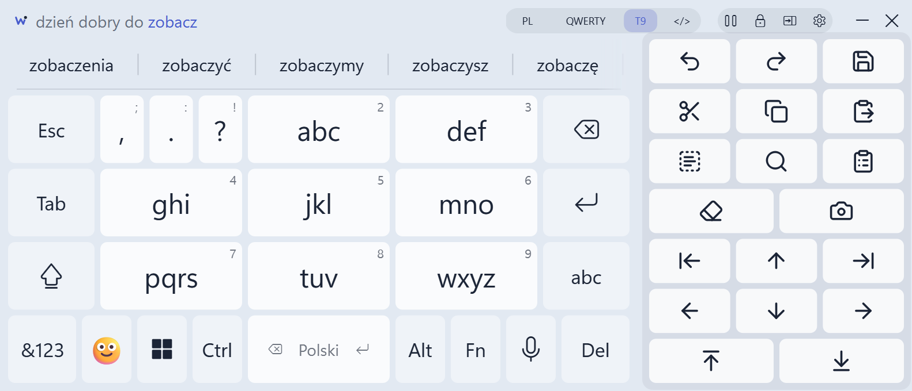
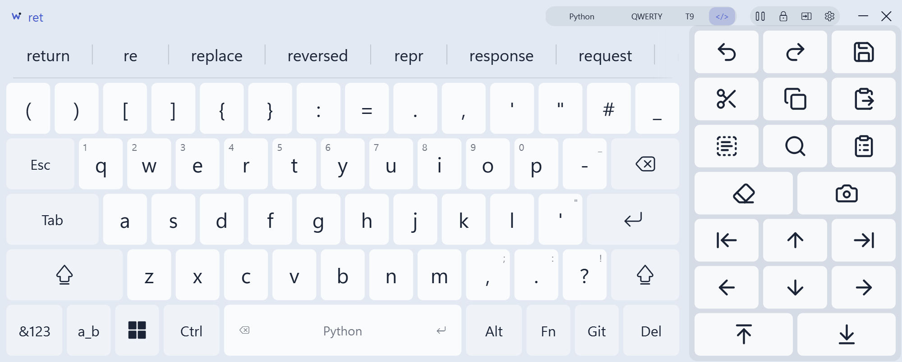
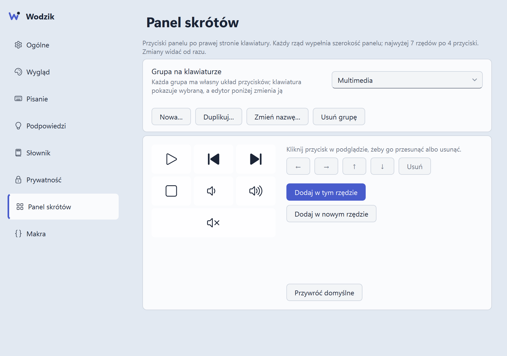
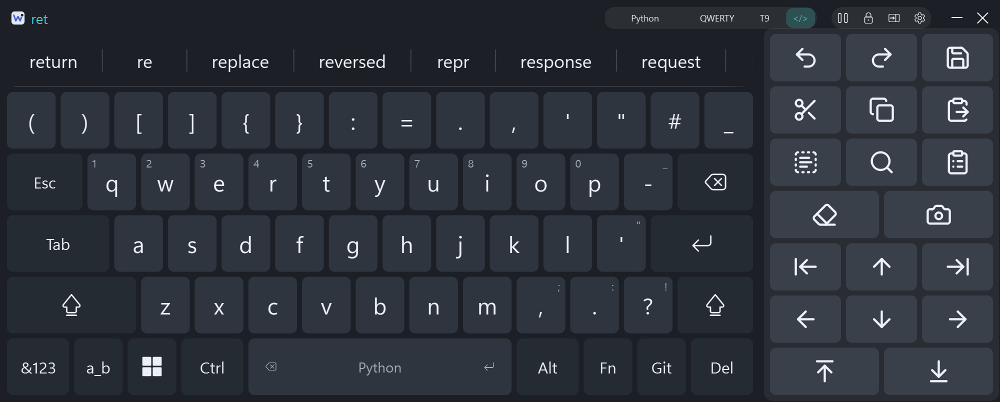

Swipe
Przeciągnij po literach z wciśniętym przyciskiem myszy: całe słowo jednym ruchem.
Inne odczyty gestu w pasku
Klawiatura ekranowa dla Windows 11: klikanie, swipe i T9, podpowiedzi po polsku i angielsku. Wszystko offline.

Każda funkcja Wodzika jest po to, żeby klikać mniej i pisać szybciej.
Przeciągnij po literach z wciśniętym przyciskiem myszy: całe słowo jednym ruchem.
Dziewięć dużych pól: mniej celowania, a Wodzik sam zgaduje słowo. Swipe też działa.
Do 15 słów w pasku: dokończenie wyrazu i propozycje następnego słowa.
Przytrzymaj klawisz albo kliknij go prawym przyciskiem. Spacja sama uzupełnia ogonki.
Przeciągnij ze spacji w lewo, żeby kasować (dalej: całe słowa), w prawo, żeby wysłać Enter.
Wpisz „serce”, „kawa” albo „brawo”, a pasek podsunie pasujące emoji.
Po skopiowaniu pasek pokazuje początek tekstu, a jedno kliknięcie wkleja go bez formatowania. Działa też z obrazami.
Zapamiętuje Twoje słowa i to, co zwykle piszesz po czym. Wszystko zostaje na Twoim komputerze.
Przełączasz je jednym kliknięciem na górnym pasku klawiatury.
Klikaj albo przeciągaj po literach. Polski słownik ma około 350 tysięcy słów, a podpowiedzi biorą pod uwagę poprzednie słowa.

Każde pole to kilka liter, a Wodzik zgaduje słowo ze słownika. Gdy trzeba, klawisz abc pozwala pisać litera po literze.

Rząd symboli wybranego języka, słowa kluczowe w podpowiedziach, bez autokorekty i polskich liter.

Nie musisz szukać Backspace ani Entera w rogach klawiatury. Spacja jest największym klawiszem, więc najłatwiej w nią trafić.
Przeciągnięcie w lewo o szerokość klawisza kasuje znak, a każde półtora klawisza dalej kasuje kolejne całe słowo. Enter idzie dopiero po puszczeniu przycisku, a powrót do środka go anuluje.
Około 70 gotowych skrótów w grupach: edycja, kursor, przeglądarka, multimedia, okna i pulpity wirtualne, Teams. Możesz też dodać własne i ułożyć kilka grup.
Makra wpisują tekst, naciskają skróty i robią pauzy, np. powitanie z podpisem albo {ctrl+s}{pause 300}{alt+f4}. Uruchamiasz je klawiszem Fn albo z listy w panelu.

Zaznacz tekst w dowolnym programie, a Wodzik podsunie przyciski: w pasku podpowiedzi albo w dymku nad zaznaczeniem.
„Szybkie redagowanie dokumentów bez odrywania ręki od myszy”
„+ 7 słów” dodaje do słownika wszystkie słowa z zaznaczenia, których słownik jeszcze nie zna.
Rząd symboli wybranego języka, podpowiedzi ze słów kluczowych i Twoich nazw, bez autokorekty. W komentarzach i tekstach w cudzysłowie wracają podpowiedzi po polsku i angielsku.

Klawisz a_b, potem słowa oddzielane spacją.
Przytrzymaj a_b: a_b, aB, Ab, A_B, a-b.
Przytrzymaj = albo -, żeby wybrać operator. Przytrzymany ( wstawia () z kursorem w środku.
Proste polecenia wykonują się od razu, commit -m czeka na opis.
To, co wpisujesz, nie opuszcza Twojego komputera. Bez telemetrii, bez serwerów, bez konta.
Program nie łączy się z siecią: niczego nie wysyła i niczego nie pobiera.
Słownik osobisty, historia słów i makra są zaszyfrowane kluczem Twojego konta Windows (DPAPI).
W polach oznaczonych jako hasło i w wybranych programach (np. menedżerach haseł) nic nie jest podpowiadane ani zapisywane.
Bez konta, logowania i subskrypcji. Uczenie wstrzymasz jednym przyciskiem, a dane przeniesiesz eksportem do pliku.
Wodzik nie jest jeszcze dostępny do pobrania. Napisz do mnie, jeśli chcesz go przetestować, masz pytanie albo pomysł.
adzikg [małpa] gmail.comCtrl + Alt + K albo ikona w zasobniku obok zegara. Klawiatura może też sama wysuwać się po kliknięciu w pole tekstowe (Ustawienia → Ogólne).
Ustawienia → Prywatność → Eksportuj do pliku, a na drugim komputerze Importuj z pliku. Plik eksportu nie jest zaszyfrowany, więc po przeniesieniu go usuń.
Nie wpisze tekstu do okien uruchomionych jako administrator. T9 nie wpisze słowa spoza słownika (do tego służy QWERTY), a swipe po polach T9 jest mniej trafny niż na QWERTY.